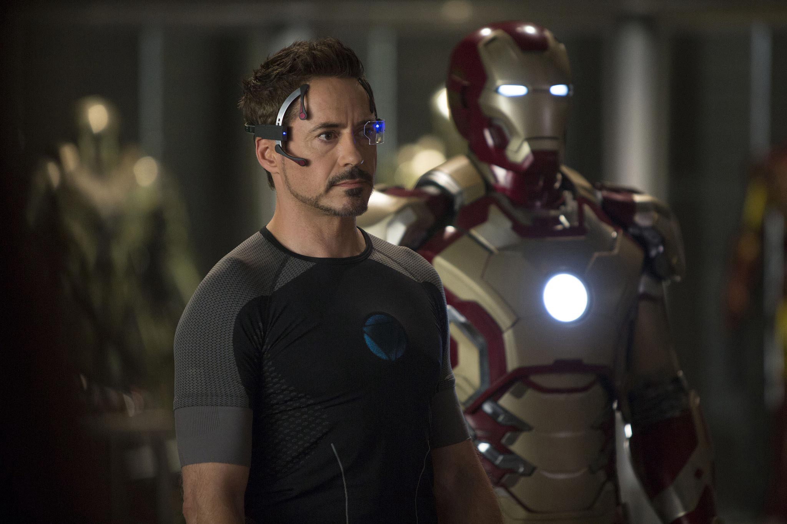
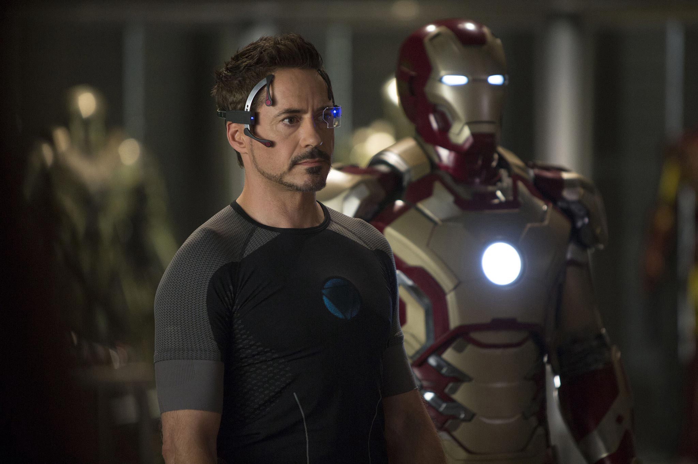

Il y a quelques années, Iron-Man débarquait au de cinémas. Et si comme lui, tout le monde avait son assistant personnel ultra développé ?
La science-fiction est-elle un avant-goût du futur ? Admettons quelques instants que ce soit le cas, et projetons-nous dans l’univers des super-héros avec Iron-Man. Bien que les comics n’étaient pas toujours un franc succès, le milliardaire Tony Stark dans son costume d’Iron-Man est désormais le fer de lance de la culture populaire. Cette popularité est due aux films Iron-Man et Avengers des studios Marvel, mais aussi et bien sûr à l’interprétation de l’acteur, Robert Downey Junior. Dès 2008, les yeux des petits garçons brillent dans les salles obscures qui diffusent les films dans lesquels Iron-Man sauve le monde à de nombreuses reprises. Mais Tony Stark n’a pas de pouvoir. Certes, c’est un génie, mais il est, pour ainsi dire, simplement le riche héritier de l’entreprise d’armement de son père. C’est là que réside sa force, sa richesse au service de son génie. Avec le temps, Tony Stark créera de nombreuses armures (de plus en plus autonome), de nombreux gadgets, de nombreuses armes mais aussi, et c’est ce qui nous intéresse, des Intelligences Artificielles (IA). La première, J.A.R.V.I.S, était initialement le système vocal de Tony Stark. Au fil du temps et du perfectionnement de ses armures, Iron-Man en fera une Intelligence Artificielle quasiment indépendante. Cependant, J.A.R.V.I.S n’est pas une Intelligence Artificielle «forte» capable d’apprendre et d’évoluer entièrement seule. Par la suite, Tony Stark créera avec le Docteur Bruce Banner (Hulk), Ultron une IA forte. À la suite de cela, J.A.R.V.I.S sera détruit, Ultron désactivé puis F.R.I.D.A.Y verra le jour, remplaçant ses deux prédécesseurs. Dans cette saga de film, l’Intelligence Artificielle est donc omniprésente. Cependant, comment pourrait-elle se matérialiser dans notre vie et dans notre quotidien ? Depuis quelques années, nos ordinateurs et surtout nos téléphones nous mettent en relation avec une Intelligence Artificielle très concrètement, dès la première utilisation de l’appareil. Pour ne citer que les plus connus, Google et Apple proposent l’un et l’autre des services similaires. Il y a une première phrase qui lance l’assistant vocal et ensuite, on peut énoncer une demande simple à celui-ci afin de recevoir une information, d’accéder à un site ou de lancer une musique via une tierce application. Même si cela ne marche pas toujours à la perfection, force est de reconnaitre que c’est assez probant. Tant est si bien que ces mêmes assistants vocaux s’exportent de plus en plus sous forme d’enceinte connectée qui gère de plus en plus d’appareils dans votre maison (télévision, musique, éclairage et pourquoi pas volet roulant). Plus le temps passe, plus il nous est possible de contrôler notre environnement grâce à notre voix. Facilitant la vie de certains, donnant simplement la sensation d’être Tony Stark à d’autre, l’Intelligence Artificielle peut-elle être un danger pour nous et surtout pour la planète ? Dans les articles J.A.R.V.I.S, oui mais à quel prix ? et J.A.R.V.I.S devrait rester un fantasme ?, nous essaierons de trouver des réponses à cette question.
Avoir son propre assistant vocal est bien-sûr un rêve pour beaucoup. Mais à quel coût pour la planète ce rêve serait-il réalisable ?
Finalement, certains rêves ne sont jamais réalisés. C’est peut-être mieux ainsi. Comment, en ce sens, pouvons-nous aller un peu plus loin ?
 
